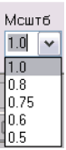

1. Состав исполнителей:
Состав исполнителей на железнодорожных участках:
| Исполнители |
Разряд квалификации не менее |
Количество исполнителей |
| Инженер сервисной организации |
- |
1 |
| Электромеханик центрального поста |
- |
1 |
2. Условия производства работ
2.1. Анализ работы по записям в журналах, просмотр и анализ информации системных журналов АРМ, станций связи, шлюзов производится без прекращения функционирования системы.
2.2. Работа производится электротехническим персоналом, имеющим группу по электробезопасности при работе в электроустановках до 1000 В не ниже III, перед началом работ проинструктированным в установленном порядке.
2.3. К работе допускается обслуживающий персонал, прошедший специальную подготовку и выдержавший испытания в знаниях условий эксплуатации системы в соответствии с процедурами, принятыми в ОАО «РЖД».
2.4. Допуск на объект, оформление записей в журналах, контроль качества работ, выполняемых подрядными организациями, участие в приемке выполненных работ осуществляется эксплуатационным персоналом в соответствии с требованиями Инструкции по техническому обслуживанию и ремонту устройств и систем сигнализации, централизации и блокировки, утвержденной распоряжением ОАО «РЖД» от 30 декабря 2015 г. № 3168р.
3. Средства защиты, измерений, технологического оснащения; монтажные приспособления, испытательное оборудование, инструменты, техническая документация
Диспетчерская централизация ДЦ «Юг». Руководство по эксплуатации 36818650.39003.001-01 РЭ;
Диспетчерская централизация ДЦ «Юг». Технология обслуживания.
Технологические карты по техническому обслуживанию ДЦ «Юг» на базе КП «Круг» 36818650.39003.001-01 ТО.
4. Подготовительные мероприятия
4.1. Подготовить техническую документацию, указанную в разделе 3.
5. Обеспечение безопасности движения поездов
5.1. Анализ работы по записям в журналах, просмотр и анализ информации системных журналов АРМ, станций связи, шлюзов производится в технологическое «окно» с согласия поездного диспетчера (далее – ДНЦ).
5.2. Работа выполняется без оформления записи в Журнале осмотра путей, стрелочных переводов, устройств сигнализации, централизации и блокировки, связи и контактной сети формы ДУ-46 (далее – Журнал осмотра).
5.3. Работа по просмотру и анализу общего журнала работы системы и по просмотру и анализу «черного ящика» выполняется на рабочем месте электромеханика центрального поста (далее – АРМ ШН).
5.4. При выполнении работы обеспечить безопасность движения в соответствии с требованиями Инструкции по обеспечению безопасности движения поездов при технической эксплуатации устройств и систем СЦБ ЦШ-530-11, утвержденной распоряжением ОАО «РЖД» от 20 сентября 2011 г. № 2055р.
Примечание. Здесь и далее по тексту целесообразно проверить действие ссылочных документов. Если ссылочный документ заменен (изменен), то при пользовании данной картой технологического процесса следует руководствоваться заменяющим (измененным) документом. Если ссылочный документ отменен без замены, то применяется та часть текста, где не затрагивается ссылка на этот документ.
6. Обеспечение требований охраны труда
6.1. При выполнении технологических операций следует руководствоваться требованиями «Инструкции по охране труда для электромеханика и электромонтера устройств сигнализации, централизации и блокировки в ОАО «РЖД» от 03 ноября 2015 № 2616р и «Правилами по охране труда при техническом обслуживании и ремонте устройств сигнализации, централизации и блокировки в ОАО «РЖД» (ПОТ РЖД-4100612-ЦШ-215-2021), утверждёнными распоряжением ОАО «РЖД» от 19 февраля 2021 г. №346/р.
ВНИМАНИЕ. Место работ должно иметь достаточное для их производства освещение. При необходимости следует применять переносные осветительные приборы.
7. Технология выполнения работ
7.1. Просмотр и анализ общего журнала работы системы.
Просмотр и анализ общего протокола событий системы производится с помощью специализированного программного компонента «Протокол» (модуль RegisterMessages) из состава программного обеспечения ДЦ «Юг» либо со шлюза-сервера поста ДЦ, либо любого АРМ центрального поста ДЦ, при этом сообщения системы хранятся в базе данных SQL-сервера и доступны с любого АРМ в сети ДЦ.
7.1.1. На АРМ ШН запустить модуль «Протокол» помощью одноименного ярлыка на рабочем столе. После запуска модуля на экране появится главное окно приложения (Рисунок 1), будет произведено подключение к SQL-серверу, и список сообщений модуля заполнится текстом сообщений актуальной даты (Рисунок 1).

Рисунок 1. Главное окно модуля «Протокол».

Выбор даты и временного диапазона
Фильтр сообщений
7.1.2. Выбрать временной диапазон для анализа (Рисунок 1). Для этого нужно установить дату в верхнем левом углу окна.
ПРИМЕЧАНИЕ: Модуль отображает в окне ограниченное число записей (по умолчанию 300), при необходимости можно изменить это ограничение в соответствующем поле «Записей <=».
ПРИМЕЧАНИЕ: Можно задать точный интервал времени, за который необходимо проанализировать работу системы, для этого в поле «ОТ» указать начальное время, в поле «ДО» указать конечное время.
7.1.3. В «фильтре сообщений» (Рисунок 1) установить флажок на фильтр «Станция» (Рисунок 2), при этом станет доступным соответствующий комбо-бокс (Рисунок 2) с вариантами возможных значений, необходимо выбрать нужную опцию и нажать кнопку «Обновить».
Рисунок 2. Типы фильтров для анализа систем.

Фильтры
Комбо-бокс
Кнопка «Обновить»
ВНИМАНИЕ: Фильтр отключается снятием соответствующего флажка.
ВНИМАНИЕ: Флажок «Снять все фильтры и показать все» (Рисунок 2) используется для быстрой отмены нескольких фильтров.
ПРИМЕЧАНИЕ: Выбор фильтруемых сообщений всегда ограничивается сутками в пределах установленной даты или конкретными значениями времени «ОТ» и «ДО» в пределах заданных суток.
ПРИМЕЧАНИЕ: Модуль позволяет выбирать сообщения, содержащие заданный фрагмент текста. Для этого используется флажок «Поиск текста» (Рисунок 2) и соответствующее поле справа от флажка, куда предварительно необходимо ввести нужный текст. Следует отметить, что поиск текста не ограничивается сутками от установленной даты, а выполняется по всем записям, начиная с указанной даты и времени, а число отображаемых записей ограничивается значением, указанным в поле «Записей <=».
7.1.4. В случае выявления отклонений в работе принять меры к выявлению и устранению неисправностей в работе системе. В случае отсутствия отклонений выполнить пункт 7.1.5.
7.1.5. Выполнить анализ по фильтрам «Тип», «Подсистема», «Приложение» и «Хост» в соответствии с пунктами 7.1.2-7.1.4.
7.2. Просмотр и анализ «черного ящика».
Для просмотра и анализа состояния объектов контроля и управления используется программный модуль АРМ ШН из состава ПО ДЦ «Юг» (Рисунок 3). Модуль может быть запущен либо на рабочем месте электромеханика центрального поста, либо на компьютерах Шлюза-сервера или Станции связи поста ДЦ.
Рисунок 3. Общий вид окна модуля АРМ ШН.
7.2.1. Для перехода в режим просмотра архива нажать кнопку «Черный ящик» (Рисунок 4), при этом она остается в фиксированном утопленном положении.
Рисунок 4. Кнопка «Черный ящик».
Кнопка «Черный ящик»
ПРИМЕЧАНИЕ: Для возврата в режим отображения актуального состояния кнопку «Черный ящик» необходимо нажать повторно.
7.2.2. Выбрать период времени в полях календаря и задания времени, нажать кнопку «Воспроизведение вперед» (Рисунок 5).
Рисунок 5. Выбор параметров для просмотра архива.
Выбор станции
Модуль «Протокол»
Выбор периода времени
Кнопка «Воспроизведение вперед»
ПРИМЕЧАНИЕ: При выполнении пункта 7.2.2 система автоматически произведет поиск и загрузку файла архива с сервера. В случае отсутствия архива за указанный период времени будет выведено сообщение: «Извините, архив за указанный период не найден».
ПРИМЕЧАНИЕ: Для просмотра архива по конкретной станции ее необходимо выбрать с помощью выпадающего списка «Выбор станции» (Рисунок 5).
ПРИМЕЧАНИЕ: Для управления режимами просмотра архива используются следующие средства:
- панель включения/отключения режима ускоренного просмотра и задания темпа ускорения (по умолчанию режим выключен, воспроизведение производится в темпе реального времени).

- выпадающий список выбора масштаба отображения схемы.
- шаг вперед (назад) либо до любого изменения в наборе ТС, либо до изменения выбранного сигнала ТС, либо до изменения состояния канала связи; либо на время, заданное в поле «Шаг, мин» в минутах.
- позволяет задать временной интервал в минутах для пошагового просмотра.
- флажок «Изменение ТС» и поле ввода имени сигнала, изменение состояния которого необходимо отследить; эти поля позволяют отслеживать изменение нужного сигнала: если флажок «Изменение ТС» включен, при нажатии кнопок пошагового просмотра будет происходить пропуск архива до момента изменения состояния выбранного сигнала и отображение схемы с найденным набором ТС.
- при включении этого флажка и при нажатии кнопок пошагового просмотра будет происходить пропуск архива до моментов потери и восстановления связи со станцией.
Выбрать модуль «Протокол» для просмотра сообщений системы синхронно с воспроизведение архива, при этом появится дополнительное окно (Рисунок 6) с отображением сообщений протокола, появляющихся по мере просмотра архива. В случае необходимости можно просмотреть архивы, используя фильтры «Станция», «Тип», и «Подсистема» (Рисунок 6).
Рисунок 6. Дополнительное окно.
7.2.4. В случае выявления отклонений при просмотре архива принять меры к выявлению и устранению неисправностей в работе системе.
7.3. Просмотр и анализ протоколов отдельных модулей.
Для детального анализа работы конкретных модулей необходимо просматривать и анализировать протоколы (log-файлы) конкретных программных модулей. Log-файлы представляют собой отдельные текстовые файлы, в которые записываются детализированные сообщения о работе и состоянии конкретного модуля.
ПРИМЕЧАНИЕ: Log-файлы записываются в папку LOG базового каталога программного обеспечения (по умолчанию это папка «c/armdnc/log)». Имена log-файлов включают базовое имя модуля и астрономическое число месяца, например, файл monitor-21.log содержит сообщения за 21-е число последнего месяца.
ВНИМАНИЕ: При таком способе именования, срок хранения log-файлов составляет один календарный месяц.
ПРИМЕЧАНИЕ: Имена модулей ПО ДЦ «ЮГ» и имена соответствующих log-файлов приведены в таблице 1.
| Модуль |
Файл |
| Модуль Управление АРМ ДНЦ (monitor) |
Monitor-XX.log |
| Модуль Табло АРМ ДНЦ (tablo) |
Tablo-XX.log |
| Модуль Станция связи поста ДЦ (mdmagent) |
Mdmagent-XX.log |
| Модуль АРМ ШН (armtools) |
Armtools-XX.log |
| Модуль Шлюз СПД (bridgetcp) |
Bridgetcp-xx.log |
| Модуль Шлюз ГИД-УРАЛ (gidUralplugin) |
GidUralplugin-XX.log |
| Служба архивирования и синхронизации paArchiveSvc |
paArchiveSvc-XX.log |
| Служба удаленной загрузки файлов paService |
paService-XX.log |
7.3.1. Зайти в папку с логами «c/armdnc/log».
7.3.2. Выбрать соответствующий файл с учетом имени модуля и нужной даты.
7.3.3. Открыть файл для просмотра двойным щелчком манипулятора типа «мышь», при этом откроется системное приложение для просмотра текстовых файлов (по умолчанию блокнот).
7.3.4. Просмотреть log-файлы, обращая внимание на следующую информацию: сведения о параметрах и процессе запуска/остановки модуля, детальную информацию обо всех событиях в процессе работы модуля. Пример фрагмента log-файла модуля управления представлен на рисунке 7.
Рисунок 7. Пример фрагмента log-файла.
ВНИМАНИЕ: Записи в log-файлах отсортированы по времени.
7.3.5. Просмотреть log-файлы по оставшимся модулям в соответствии с пунктами 7.3.2-7.3.4.
7.3.6. В случае выявления отклонений при просмотре log-файлов принять меры к выявлению и устранению неисправностей.
7.4. В случае невозможности провести анализ работы по записям в журналах, просмотр и анализ информации системных журналов АРМ, станций связи, шлюзов передать информацию диспетчеру центра диагностики и мониторинга для организации оповещения разработчика системы (центра сервисного обслуживания) для принятия мер.
8. Заключительные мероприятия, оформление результатов работы
После окончания анализа работы по записям в журналах, просмотра и анализа информации системных журналов АРМ, станций связи, шлюзов оповестить ДНЦ об окончании работы, сделать запись в журнале ШУ-2 о проведенной работе и внести результаты выполнения работы в систему ЕК АСУИ в соответствии с требованиями, изложенными в разделе 4 «Порядка планирования, учета и контроля выполнения работ в хозяйстве автоматики и телемеханики», утверждённого распоряжением ОАО «РЖД» от 13 января 2020 г. №20/р.
Результаты работы специализированная организация оформляет в журнале учета выполненных работ по техническому обслуживанию и ремонту устройств и систем ЖАТ по форме, представленной в регламенте взаимодействия между участниками процесса технического обслуживания и ремонта систем и устройств железнодорожной автоматики и телемеханики ОАО «РЖД», осуществляемых специализированными организациями, утвержденном распоряжением ОАО «РЖД» от 30 декабря 2017 г. № 2827р.
Начальник отдела ПКБ И
Конструктор 1 категории ПКБ И
Е.Н. Иванов
В.В. Харламов